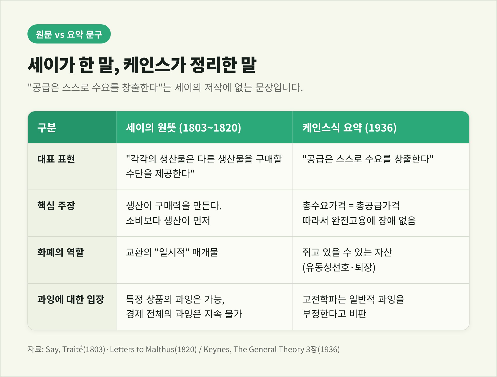
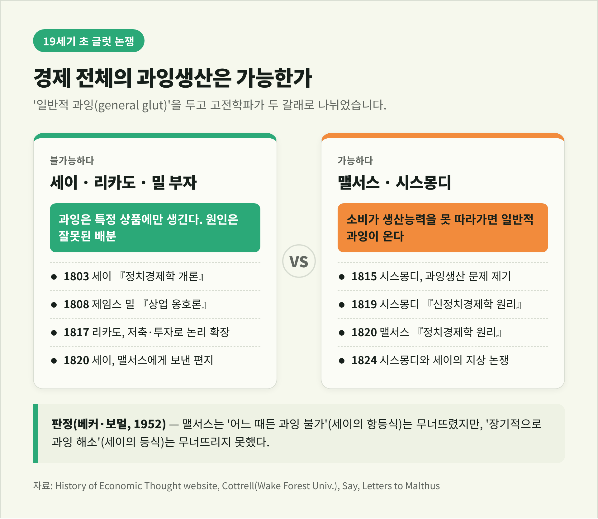
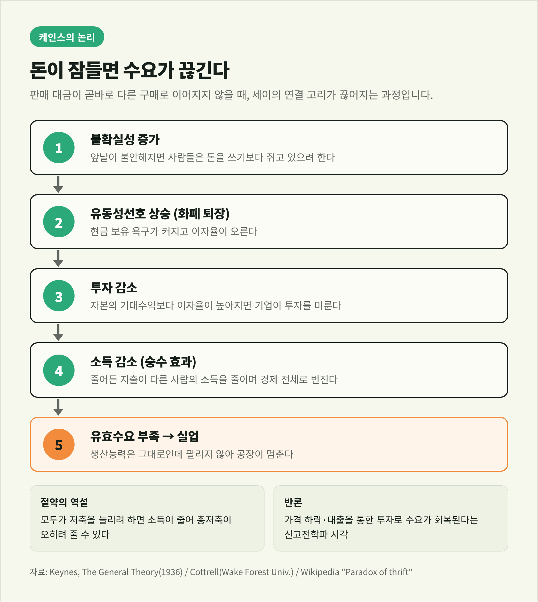
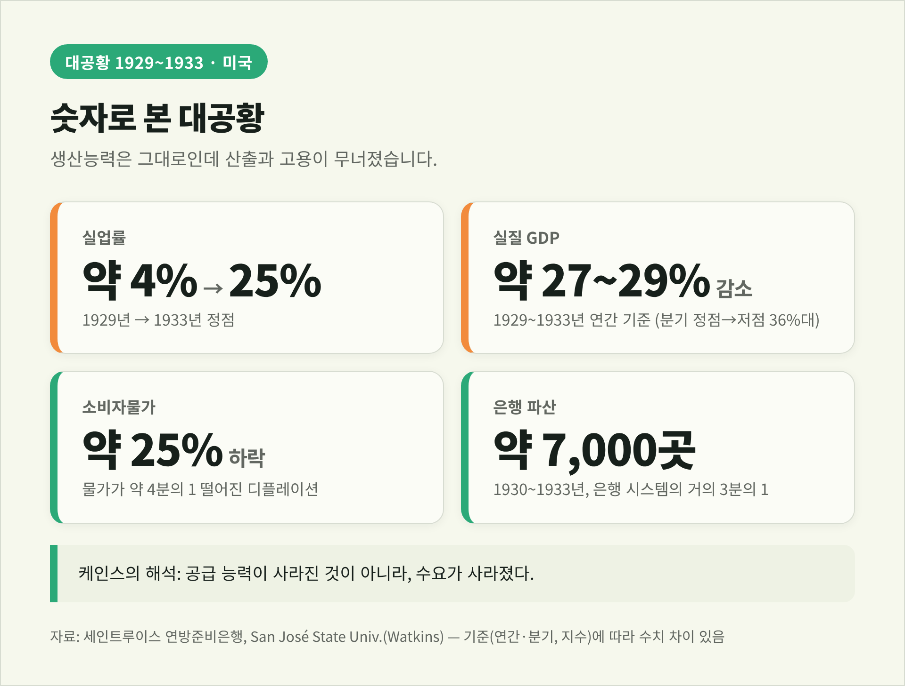
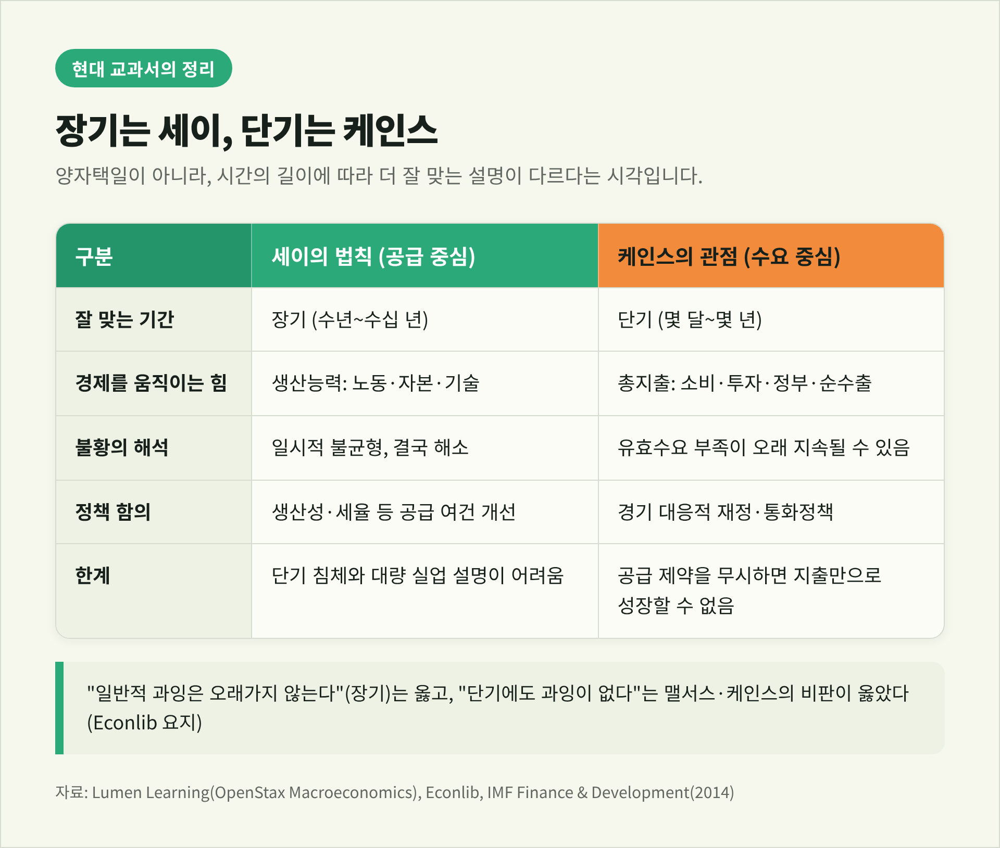

세이의 법칙과 케인스의 반론 — 공급은 정말 스스로 수요를 만들어 낼까

이번 글에서는 경제학 교과서의 단골 문장, "공급은 스스로 수요를 창출한다"를 정리해 보겠습니다. 흔히 세이의 법칙으로 불리지만, 정작 세이는 이 문장을 쓴 적이 없습니다. 200년 넘게 이어진 이 논쟁이 오늘의 경기침체와 재정정책 논의에 무엇을 남겼는지까지 따라가 보겠습니다.
세 줄 요약
- 세이(1767~1832)의 원뜻은 "생산물은 다른 생산물을 살 수단이 된다"에 가깝습니다. 특정 상품의 과잉은 있어도 경제 전체의 과잉은 오래가지 않는다는 주장입니다.
- "공급은 스스로 수요를 창출한다"는 요약 문구는 세이의 저작에 없고, 1930년대 케인스가 널리 퍼뜨린 표현입니다.
- 오늘날 주류 교과서는 장기에는 세이 쪽, 단기에는 케인스 쪽 설명이 더 잘 맞는다고 정리합니다.
■ 세이가 1803년에 실제로 한 말
장바티스트 세이는 1767년 프랑스 리옹에서 태어났습니다. 보험회사에서 일하던 젊은 시절 애덤 스미스의 『국부론』을 읽고 경제학의 길로 들어섰습니다. 1803년 펴낸 『정치경제학 개론』은 영어로 번역되어 영국과 미국에서 교과서로 쓰였습니다. 면방직 공장을 직접 운영해 본 실무가였고, 훗날 콜레주 드 프랑스에서 가르쳤습니다.
그가 1803년 초판에 남긴 문장은 이렇습니다. "각각의 생산물은 다른 생산물을 구매할 수단을 제공한다." 후대 영역본에서는 "생산물은 만들어지는 바로 그 순간부터 다른 생산물을 위한 판로가 된다"로 옮겨졌습니다.
핵심은 '다른' 생산물이라는 대목입니다. 농부가 곡물을 팔아 번 돈으로 아이 옷을 사는 장면을 떠올리면 쉽습니다. 곡물의 공급이 곡물의 수요를 만드는 것이 아니라, 옷이라는 다른 상품의 수요를 만든다는 뜻입니다. 소비할 능력은 생산에서 나온다는 것, 그래서 생산이 소비보다 먼저라는 것이 세이의 출발점이었습니다.
화폐에 대한 시각도 중요합니다. 세이는 화폐가 교환에서 "일시적 기능"만 한다고 봤습니다. 돈을 처분하는 유일한 방법은 결국 무언가를 사는 것이라는 이유에서였습니다. 이 가정이 100여 년 뒤 케인스의 공격 지점이 됩니다.

■ 그 유명한 문장은 누가 만들었나
"공급은 스스로 수요를 창출한다"는 문장은 세이의 책 어디에도 없습니다. 영어 위키백과, 대학 교과서, 자유시장 성향의 미제스연구소 글까지 이 점에서는 입장이 같습니다.
문장의 출처는 지금도 논쟁거리입니다. 경제사학자 클라우어(2004)는 고전학파 저작에서 이 문구를 찾을 수 없다고 지적했습니다. 확인되는 이른 사례는 1930년대 초 케인스의 메모와 편지입니다. 1934년 편지라는 설명도 있고, 1933년 회의용 메모라는 설명도 있습니다. 케임브리지 학자들 사이에서 입으로 전해지던 표현이었을 가능성도 거론됩니다. 반대로 백과사전 Econlib은 제임스 밀이 이 문구를 처음 썼다고 적고 있어, 기원은 한 가지로 정리되지 않습니다.
분명한 것은 1936년 『일반이론』이 이 문장을 고전학파의 교리로 못 박았다는 사실입니다. 케인스는 세이의 법칙을 "총산출의 총수요가격이 총공급가격과 같다"로 재정식화했습니다. 그렇다면 "완전고용에 아무 장애가 없다"는 결론이 나오고, 그는 바로 이것을 공격했습니다.
케인스가 근거로 든 인용에도 뒷말이 있습니다. 그는 존 스튜어트 밀의 "상품에 대한 지불 수단은 단순히 상품이다"를 인용했습니다. 그러나 경제사 학술지에 실린 그리브의 분석에 따르면, 밀은 소비할 '능력'을 말했지 소비할 '의향'을 말한 것이 아니었습니다. 케인스가 맥락이 잘린 2차 문헌에서 이 구절을 가져왔다는 지적입니다. 같은 분석은 다만 밀의 입장이 실질적으로는 케인스의 비판을 받을 만했다고도 덧붙입니다.
■ 19세기의 글럿 논쟁: 과잉생산은 가능한가
세이의 주장은 처음부터 도전을 받았습니다. 쟁점은 하나였습니다. 특정 상품이 아니라 경제 전체에 걸쳐 상품이 남아도는 '일반적 과잉(general glut)'이 가능한가.
한쪽에는 세이와 리카도, 그리고 밀 부자가 섰습니다. 리카도는 "생산하는 사람은 누구나 소비하거나 팔기 위해 생산한다"고 썼습니다. 과잉은 일부 상품에서 생길 뿐이고, 원인은 생산이 많아서가 아니라 잘못 배분되어서라는 입장이었습니다.
다른 쪽에는 시스몽디와 맬서스가 있었습니다. 시스몽디는 전쟁 직후 영국을 둘러본 경험을 바탕으로 1819년 『신정치경제학 원리』를 냈습니다. 산업자본주의는 "불충분한 일반 수요" 때문에 공황에 빠지기 쉽다는 진단이었습니다. 맬서스는 1820년 『정치경제학 원리』에서 투자는 생산능력을 늘리지만 소비는 뒤처질 수 있다고 봤습니다. 지주가 지대를 쓰지 않고 쌓아 두면 물건이 팔리지 않는 시기가 올 수 있다는 것입니다.
세이는 1820년 맬서스에게 보낸 편지로 응수했습니다. "어떤 종류의 생산물이 너무 많은 것은 다른 종류가 충분히 생산되지 않았기 때문"이라는 반론이었습니다. 그는 정체의 원인으로 보호관세와 독점, 나쁜 행정을 지목했습니다. 흥미롭게도 시스몽디가 제시한 재고 과잉의 사실 자체는 인정했습니다.

논쟁의 결론은 묘했습니다. 후대 학자 베커와 보멀(1952)은 '세이의 항등식'과 '세이의 등식'을 구분했습니다. 항등식은 어느 순간에도 과잉이 불가능하다는 강한 주장이고, 등식은 장기적으로 과잉이 해소된다는 약한 주장입니다. 맬서스는 앞의 것은 무너뜨렸지만 뒤의 것은 무너뜨리지 못했다는 평가입니다. 리카도는 장기를, 맬서스는 단기를 보며 서로 다른 이야기를 한 셈입니다. 결국 고전학파 대다수는 장기적으로 세이의 법칙이 성립한다는 쪽에 섰습니다. 케인스는 훗날 이를 두고 "리카도는 종교재판소가 스페인을 정복한 것만큼 완벽하게 영국을 정복했다"고 썼습니다.
■ 돈이 잠들면 생기는 일: 저축과 유효수요
케인스가 파고든 곳은 화폐였습니다. 세이와 리카도는 돈이 잠깐 손을 거쳐 가는 매개물이라고 봤습니다. 사실상 물물교환 경제를 전제한 셈입니다.
그러나 불확실성이 커지면 사람들은 돈을 쓰지 않고 쥐고 있으려 합니다. 케인스는 이를 유동성선호, 혹은 "퇴장성향"이라 불렀습니다. 유동성선호가 커지면 이자율이 오르고, 투자가 줄고, 그 감소는 승수 효과로 소득 전체에 번집니다. 팔려고 내놓은 물건의 대금이 다른 물건의 구매로 곧장 이어지지 않는 순간, 세이의 연결 고리는 끊어집니다.
케인스는 고용량이 총수요와 총공급이 만나는 점, 즉 유효수요에서 정해진다고 봤습니다. 그 유효수요를 좌우하는 것은 소비성향과 신규 투자였습니다. 공급 능력이 그대로여도 수요가 모자라면 공장은 멈추고 사람들은 일자리를 잃는다는 설명입니다.
여기서 '절약의 역설'이 나옵니다. 모두가 소비를 줄여 저축을 늘리려 하면 소득이 줄어 총저축이 오히려 줄 수 있습니다. 케인스는 "소비를 줄여 더 저축하려는 모든 시도는 그 시도 자체를 좌절시킨다"고 적었습니다. 개인에게는 미덕인 절약이 경제 전체에서는 짐이 될 수 있다는 이야기입니다.
반론도 만만치 않습니다. 신고전학파는 수요가 줄면 가격이 떨어져 수요가 회복된다고 봅니다. 저축이 은행을 통해 대출되면 투자로 이어진다는 대부자금설도 있습니다. 다만 가격이 경직적이거나, 돈이 현금으로 묶이는 유동성 함정에서는 이 자동 회복이 잘 작동하지 않는다는 것이 케인스 쪽의 재반론입니다.

■ 대공황이라는 시험대
이론의 대결을 현실로 끌어낸 것은 대공황이었습니다. 세인트루이스 연방준비은행 자료에 따르면 미국 실업률은 1929년 약 4%에서 1933년 25%로 치솟았습니다. 실질 GDP는 1929~1933년 연간 기준으로 약 27~29% 줄었습니다. 분기 정점에서 저점까지로 재면 낙폭은 36%를 넘습니다. 소비자물가는 약 4분의 1이 떨어졌고, 1930~1933년 은행 약 7,000곳이 문을 닫았습니다. 은행 시스템의 거의 3분의 1에 해당하는 규모입니다.
케인스가 주목한 것은 생산능력이었습니다. 노동력도, 공장도, 기술도 그대로였는데 산출이 급감했습니다. 공급이 사라진 것이 아니라 수요가 사라졌다는 해석이 설득력을 얻은 배경입니다.

■ 장기는 세이, 단기는 케인스?
케인스 이후 논쟁은 끝나지 않았습니다. 1970년대 스태그플레이션은 케인스학파의 영향력을 크게 약화시켰습니다. 한편에서는 공급중시 경제학이 떠올랐습니다. 공급중시론자들은 케인스가 "세이를 거꾸로 세웠다"고 비판하며, 높은 한계세율이 생산 의욕을 꺾는다는 점에 주목했습니다. 허트, 소웰, 케이츠 같은 학자들은 케인스가 세이를 희화화했다며 세이의 법칙을 복권하려 했습니다.
공급중시 정책이 만능이었던 것은 아닙니다. 미국 최고 소득세율은 1981년 이전 70%에서 1986년 이후 40% 아래로 내려갔지만, 재정적자도 함께 커졌습니다. 경제학 백과사전 Econlib은 세율 인하를 장기 성장 전략으로 봐야 하며 단기 불황 처방은 아니라고 정리합니다.
오늘날 대학 교과서의 정리는 비교적 차분합니다. 예전엔 '세이냐 케인스냐'의 양자택일이었습니다. 지금은 시간의 길이에 따라 역할을 나눕니다.
- 장기(수년~수십 년): 생산능력이 커지면 총수요도 비슷한 속도로 따라 큽니다. 세이의 법칙이 잘 맞습니다.
- 단기(몇 달~몇 년): 수요의 출렁임이 불황과 호황을 만듭니다. 케인스의 설명이 잘 맞습니다.
- 한계: 수요만 중요하다면 정부가 지출만 늘려 경제를 마음대로 키울 수 있겠지만, 실제로는 공급 제약이 존재합니다.
Econlib도 비슷한 결론입니다. "일반적 과잉생산은 오래 지속될 수 없다"는 장기 버전은 옳고, 단기에도 과잉이 불가능하다는 주장은 맬서스와 케인스의 비판이 옳았다는 평가입니다.

■ 오늘의 경기침체와 재정정책에 남긴 것
2007~2008년 금융위기는 케인스식 사고를 다시 불러냈습니다. 국제통화기금(IMF)도 위기 이후 각국 대응에 케인스학파의 사고가 영향을 줬다고 정리합니다. 미국은 2009년 2월 경기부양법(ARRA)을 7,870억 달러 규모로 통과시켰고, 의회예산처는 2009~2019년 총비용을 약 8,310억 달러로 추정했습니다. 2020년 코로나19 국면의 CARES 법은 2조 달러를 넘어, 2019년 연방정부 총지출의 약 45%에 이르렀습니다.
다른 시각도 있습니다. 미제스연구소 측은 세이에 대한 케인스의 오독이 수요 중심 부양책을 정당화하는 데 쓰였다고 비판합니다. 수요만 부풀리면 생산의 토대를 놓칠 수 있다는 경고입니다. IMF 역시 케인스 이론이 금융 시스템을 더 잘 반영해야 한다고 짚었습니다.
결국 실무의 질문은 '수요인가 공급인가'가 아니라 '지금 경제가 어느 국면에 있는가'로 바뀝니다. 수요가 갑자기 꺼진 단기 침체라면 재정의 역할이 커집니다. 생산성과 공급 능력이 문제라면 세이가 강조한 생산의 토대를 들여다봐야 합니다. 이 글은 경제사와 이론을 정리한 것이며, 특정 투자 판단을 권하려는 것이 아닙니다.
정리하면 이렇습니다. 세이는 "생산이 구매력을 만든다"고 말했고, 케인스는 "그 구매력이 늘 쓰이지는 않는다"고 답했습니다. 두 사람의 주장은 서로를 지우기보다 시간의 길이에 따라 서로를 보완합니다.
— 공급은 수요의 조건이지만, 수요를 보장하지는 않습니다.
둘 중 누가 옳았느냐고 물으신다면, 저는 언제를 묻느냐에 따라 답이 달라진다고 말씀드리겠습니다.
참고자료
- Wikipedia — Say's law
- Wikipedia — Supply creates its own demand
- Wikipedia — Paradox of thrift
- Econlib — Jean-Baptiste Say
- Econlib — Supply-Side Economics
- History of Economic Thought — The General Glut Controversy
- History of Economic Thought — Sismondi
- J. M. Keynes, The General Theory, Chapter 3
- J.-B. Say, Letters to Malthus, Letter I
- A. Cottrell, Say's Law (Wake Forest University)
- R. Grieve, Keynes, Mill and Say's Law — Journal of the History of Economic Thought
- Mises Wire — How Keynes Got Say Wrong
- Lumen Learning — Say's Law and the Macroeconomics of Supply
- 한국경제 생글생글 — 공급경제학의 선구자 장 바티스트 세이
- IMF F&D — What Is Keynesian Economics?
- St. Louis Fed — How Bad Was the Great Depression?
- St. Louis Fed — The Great Recession vs. the Great Depression
- SJSU — The Depression of 1929
- CFR — U.S. Economic Stimulus Plan
- USAFacts — CARES Act